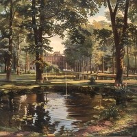
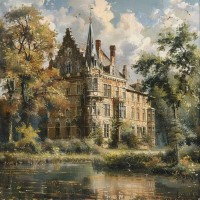

5
feitjes over Baarn
Vele families die in het buitenland (Indië) rijk waren geworden, kozen Baarn als hun laatste woonoord.
Een inwoner van Baarn heet een Baarnaar.
Koningin Juliana woonde van 4 september 1948 tot en met 30 april 1980 op grondgebied van Baarn namelijk; Paleis Soestdijk.
De gemeente Baarn is erg rijk.
Baarn was in 2016 de duurste gemeente in de regio Amersfoort om een huis te kopen.
Cantonspark Baarn
In 1914 liet August Janssen in Baarn het Cantonspark als overtuin aanleggen. De Rijksuniversiteit Utrecht nam het park in gebruik als haar botanisch tuin. In 1987 werd het park voor één gulden overgedragen aan de gemeente Baarn met als voorwaarde dat de bijzondere botanische meerwaarde van het park behouden zou blijven. Vanaf toen is het Cantonspark openbaar groen geworden. De Stichting Vrienden van het Cantonspark behartigt de belangen van het park als een bijzondere voormalige botanische tuin van grote waarde. Zij adviseert de gemeente Baarn over het onderhoud en beplanting. Belangrijke cultuurhistorische monumenten in het Cantonspark zijn: de Colonnade,het Tennishuisje en de oude muur met poort rond de huidige Rozentuin. Hethoogtepunt is een grootse plantenkas, de Wintertuin, die vanaf 1915 het hart vanhet Cantonspark is. Het gehele complex en alle individuele elementen zijnRijksmonument. De Wintertuin is sinds 10 juli 2023 voor het publiek gesloten. Met het terugbrengen van de oorspronkelijke sferen is in 2018 de restauratie vanhet park begonnen. Er zullen vooral nieuwe Aziatische soorten bomen en heesterskomen. In januari 2021 is het gerestaureerde park officieel weer geopend.
Kasteel Groeneveld
Rijke regenten zwaaiden vroeger de scepter in Kasteel Groeneveld, nu is dat het ministerie van Economische Zaken, Landbouw, en Innovatie. Het achttiende-eeuwse landhuis en het uitgestrekte landgoed trekken jaarlijks vele bezoekers. Sinds 1982 herbergt Kasteel Groeneveld het Nationaal Centrum voor bos, natuur en landschap. Vanaf 2007 is deze naam gewijzigd in 'Buitenplaats tussen stad en land'. Het landgoed waarop het kasteel ligt is recent gereconstrueerd naar de situatie rond de eeuwwisseling, dat wil zeggen dat het is aangelegd in de Engelse landschapsstijl. Het is een ideaal terrein voor wandelaars en natuurliefhebbers. In het park is een uitgezette wandelroute en een opdrachtentocht voor kinderen. Ook de 18e eeuwse moestuin, gelegen langs de oprijlaan naar het kasteel, is in oude luister hersteld en kan bezocht worden.
